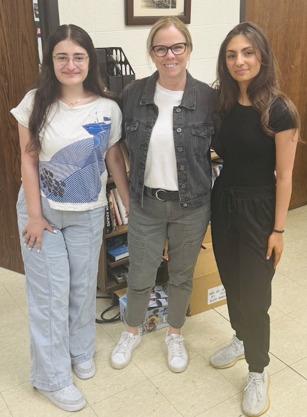

Interviewer: Do you understand and consent to have this recorded?
Interviewer: Are you willing to have this be public?
Interviewer: Do you want your name to be identified?
Interviewer: So as you have kept up with the trial, put yourself in the jours shoes. Who would you say is at fault?
Ms.Burke: Based on what I have heard so far, if I were a jour I would not know who is at fault yet because I don't think they have proven who murdered John O'keefe, and I think there is a lot of reasonable doubt right now, therefore they cannot find the defendant Karen Read guilty at this point.
Interviewer: Ok, so has your perspective changed at all throughout the case or while watching the testimonies?
Ms.Burke:My perspective hasn’t changed, all along I thought Karen Read was not guilty. I've learned a lot more details of what I believe happened that night and I've learned more about the investigation that took place after, in my perception of the investigation has definitely changed and I think there is definitely corruption during the investigation.
Interviewer: Ok. What ethical issues do you see in the handling of the investigation and the trial proceedings if any?
Ms.Burke:A lot. (laughs) A lot of the police officers who were from Canton knew the alberts, knew the mccabes. Once a police officer knows somebody involved in the crime they should automatically recuse themselves from the investigation, and they didn't do that, they got more involved and it seemed like they were given information to the people involved and that seems to continue right up until today. That is a huge ethical issue and I think that goes right up to the chief, maybe even the DA.
Interviewer :Ok, so have there been any testimonies throughout the case that have stood out to you, or seem to be flawed?
Ms.Burke:How much time do you have? (giggles)
Flawed, yes. There are a lot. I think the police officers there is a lot of procedural things that were done wrong and they were flawed in that and I think if you speak to any police officer they would agree with that. The handling of the crime scene, not securing it, the collection of evidence, the way they secured evidence. All of that was flawed.
Interviewer: Any specific testimony?
Ms.Burke:Well Jen McCabe yesterday. I think she was a hostile witness number one. So many things that she said did not match the timeline as to when they say the things happened, if you look at the times the people pulled up and when she saw Karen's vehicle and when John supposably was hit by Karen when she saw tire marks, none of it matches up with the timeline as to when Karen got home so I think that's a huge issue for the commonwealth. I don't think the commonwealth did a good job of preparing their witnesses, I think that they're almost acting as if they are on the defense, that they haven't proven that John was hit by Karen, they haven't proven that her car backed up accelerated and hit him, there has been nothing and there have been almost 40 witnesses so far and nobody has seen or heard anything or testified to the fact that Karen hit John.
Interviewer:Ok so what are your thoughts on the evidence that was presented by both sides?
Ms.Burke:I haven't seen any evidence that Karen murdered John. The people who looked out the window and saw her vehicle saw nothing, nobody in the house heard anything, I think yesterday Jim McCabe’s testimony was the most powerful with that because she said she was looking out the window during the time John supposedly died and she saw nothing that would prove that he was murdered by her. I think the facts prove that based on his injuries based on the other facts that have come out that prove corruption and that I've been led to believe that something happened either inside that house or outside that house. I don't think that they meant to murder John. I think that something got out of control and now he is dead and they got caught up in a cover up.
Interviewer: Yeah, what do you think will be the most significant factor in the jours decision?
Ms.Burke: For me it starts at the beginning. One of the things that before I knew any of the facts of the case, is you had a police officer with a dead person in their front lawn he they never came out of the house. My husbands a police officer and I know for a fact that they hear things and see things that the average person does not and the fact that they could supposably sleep through it and not hear it is, and the dog didn’t hear. Just hearing that from the beginning made me think that something was up, add to that the fact that all these Canton police officers know the alberts, know the mccabes and they seem to be all intertwined, I think that will stand out in the jours mind.
Interviewer: Ok so what are your predictions for how the case will turn out?
Ms.Burke:I predict that Karen Read is found not guilty based on reasonable doubt. I think they've already proven so much reasonable doubt. I think she should be found not guilty based on the evidence but I think as of right now there is so much reasonable doubt.
Interviewer: Great. Thank you so much!
